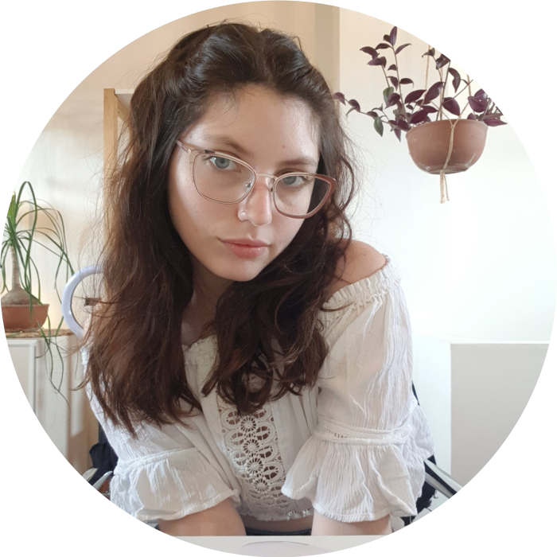

TEAM IFRAN
Soy Cami!
Soy Licenciada en Diseño de Interiores y amante del Diseño Gráfico. Me apasiona el diseño de identidad visual para marcas y su aplicación en interiores. Me parece importante lograr una identidad visual y un local comercial memorable para un buen posicionamiento de marca, lograr esto con el equipo de Corart me da felicidad. En mi tiempo libre me gusta jugar con mis mascotas, conocer nuevos lugares, mirar películas e indagar sobre las últimas tendencias. Unirme al equipo de Corart me permite ampliar mi creatividad y vivir nuevas experiencias en cada proyecto acompañada por personas que me inspiran y motivan.
Soy Ale!
Soy Diseñadora de Interiores, una apasionada del diseño comercial y especialista en el diseño de vidrieras. Desde hace más de 14 años que fundé Ifran Design® y trabajo de lo que amo. Siento que cada local tiene que transmitir emociones y hacernos vivir experiencias diferentes. Amo pensar cada detalle, me encanta combinar colores y elegir patrones, me da placer ver y tocar una textura nueva. Escucho rock, pop y clásicos de películas que me inspiran. Soy fan de las plantas y en mis tiempos libres juego con mi gatito Loki. Lo que mayor felicidad me da es ver los proyectos hechos realidad y que los clientes progresen después de invertir en diseño.
Soy Jaqui!
Soy Licenciada en Diseño de Interiores y Técnica en Equipamiento Interior. Para mí, el diseño es la unión perfecta entre la libertad del arte y la rigurosidad de la técnica. El diseño me permite salir de mis estructuras, y no hay nada más lindo que poder crear sin ataduras. Cuando no estoy diseñando, me gusta ocuparme de mis plantas, mirar películas de misterio, leer algún clásico y pasar tiempo con mi perrita Frida. Trabajar en equipo en Ifran Design diseñando locales comerciales y hoteles, me enseña a ser más creativa día a día y me permite vivir nuevas experiencias súper enriquecedoras como profesional y persona.